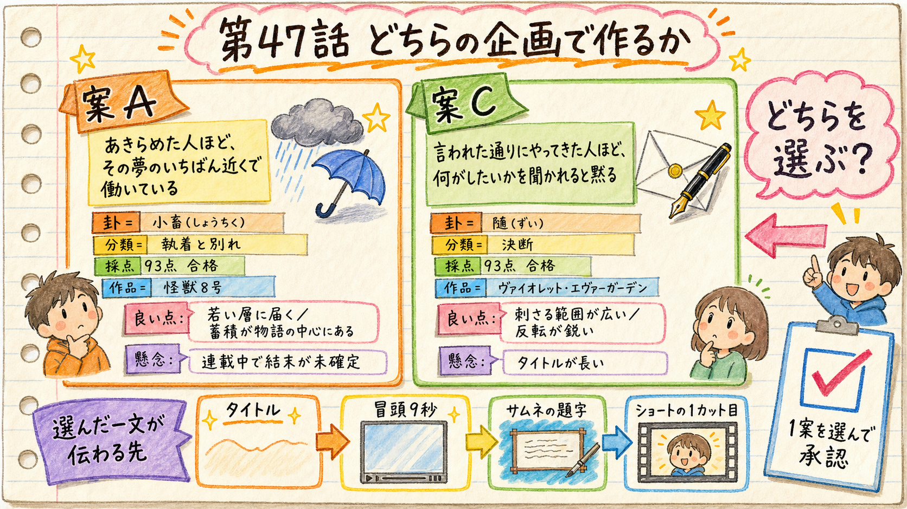

HaQei / アニメと易経 ─ 第47話 企画ゲート（3種承認の1つ目）
痛み先頭転換（H58）コホートの5本目。既出と重ならない痛み分類へ張るため、「執着・別れ」と「決断」に1案ずつ立てました。 独立採点（fork・自己採点禁止・合格線90点）を通ったのは2案です。あなたは1案を選んで承認します。

今回の承認は「作品を選ぶ」のではなく、視聴者に最初に差し出す一文（痛みの一文）を選ぶことです。 2026-07-27の工程改訂で、企画ゲートの中心は痛みの一文になりました。ここで選んだ一文が、タイトルの前半・冒頭9秒・サムネ題字・ショートS01にそのまま伝播します。
| 項目 | 案A ─ 怪獣8号 × 小畜（しょうちく） | 案C ─ ヴァイオレット・エヴァーガーデン × 随（ずい） |
|---|---|---|
| 痛みの一文（推奨案） | あきらめた人ほど、その夢のいちばん近くで働いている。 | 言われた通りにやってきた人ほど、何がしたいかを聞かれると黙る。 |
| 痛み分類 | 執着・別れ | 決断 |
| 独立採点 | 93 / 100（合格線90） | 93 / 100（合格線90） |
| 卦が言っていること | 「密雲不雨」＝厚い雲は出ている、まだ降っていないだけ。状況は不利ではない、ただ大きく動く時ではない。 | 五爻＝人は必ず何かを道しるべにして従っている。従わない選択肢は無く、選べるのは従う先だけ。 |
| 常識の反転 | 「踏ん切りがつかない自分が弱い」→ とどまったことが失敗ではない。磨かなかったことだけが失敗 | 「自分で決められないのは主体性が無いから」→ 従っていることが問題ではない。従う先を一度も選び直していないことが問題 |
| 処方箋の背骨 | 押す力を上げるのではなく、降るまでに整える | 主体性を持てではなく、従う先を選び直す（＋選べば必ず失う、を引き受ける） |
| 幕6の棘 | 「近くにいること自体は未練ではない。ただ、磨きもせずに近くにいるなら、守っているのは夢ではなく、期待されない安全のほう」 | 「自分で決められない人などいません。決めた覚えがないだけで、あなたはもう、何かに従っています。」 |
| 送りたい一文 （share_line） | あきらめた人ほど、その夢のいちばん近くで働いている。 | 何がしたいか言えない人も、もう何かに従っている。選べるのは、従う先だけ。 |
| ショート（隣の卦） | 小畜 → 履。六爻図で一本の陰が四番目から三番目へ一段下りる。「雨を降らせることはできない。踏み方を変えることだけができる」 | 随 → 蠱。従い続けた時間が澱みに変わる。「従うことの次に来るのは、直す仕事」 |
| 作品の認知 | 2024年アニメ化の大ヒット作。若年層に強い | 京都アニメーション・国際配信。知名度は高いが客層はやや静か |
| 主な懸念 | 連載中で結末未確定（使うのは序盤の確定設定のみ）／「あきらめるな」系の自己啓発に薄まりやすい | タイトルが長い（作品名11文字）／作品の情緒に語りが飲まれると感想文になる |
推奨理由：「あきらめた」と「近くにいる」が一文の中で矛盾するので、説明なしで意味が立ち上がる。3は感情の内側が無く、ep45で却下された「観察どまり」の型。5は感情が最も深いが単体では何の話か分からない＝冒頭9秒の2文目に置くのが正しい。
カフカは防衛隊の試験に落ち、受験年齢を過ぎ、怪獣の死体を解体・清掃する会社で十年以上働いている。 重要なのは「長く近くにいた」ことではなく、その十年が何を蓄えたかです。一次情報は 「モンスタースイーパーでの解体業の経験が、怪獣に関する知識や動きの理解に役立ち、後の戦闘能力の発展につながった」と二段の経緯で述べています。 小畜の上爻は「雨は小さな効果の累積によって来る」と書く。＝外から来た変化は「雨」ではなく「時」であり、蓄積が無ければ時が来ても使えるものにならない。
推奨理由：「やってきた人ほど」＝真面目にやってきた人が損をする形を一文で立てられる。4は感情の内側が良く、冒頭9秒の2文目向き。5は本質だが概念的で日常語の条件を満たさない。
ヴァイオレットは戦時、命令に従うことだけで存在が成り立っていた。戦争が終わって命令が無くなり、 他人の言葉を預かって手紙にする仕事に就く。＝従う先が「命令」から「他人の本当の言葉」へ移る。 随の五爻は「人は必ず何かを道しるべにして従っている」と書き、二爻・三爻は「選べば必ず失う。両方は持てない」と書く。 卦は「従うな」とは一言も言っていません（卦辞は「咎なし」から始まる）。
「やめると決めるのが怖いから、決めなくていい理由を探している。」で組みましたが、独立採点を2周かけても90点に届きませんでした。選択肢からは外しています。
| 案 | 1周目 | 2周目 | 3周目 | 最終 | 独立ゲート |
|---|---|---|---|---|---|
| 案A 怪獣8号×小畜 | 採点器出力破損（無効） | 85（爻の出典外の助言） | 85（卦対応が静的） | 93 合格 | ✅ 通過 |
| 案B あしたのジョー×節 | 81（意図の変質） | 84（写像の誤り） | 88（同型性が弱い） | 88 不合格 | ✅ 通過（点数で不合格） |
| 案C ヴァイオレット×随 | 92 | ─ | ─ | 93 合格 | ✅ 通過 |
採点は制作会話を見ていない独立の採点器（codex）が実施。合格線90点は変更していません。指摘はすべて成果物側を直して対応しました（基準は緩めていません）。証跡＝analytics/creative-loops/ep47-concept-*
1案を選んでください。選んだ痛みの一文がタイトル前半・冒頭9秒・サムネ題字・ショートS01に伝播します。
「あきらめた人ほど、その夢のいちばん近くで働いている。」
若年層の認知が強く、蓄積→機会の因果が作品の中心線に乗っている。私の推奨はこちら（認知度と新しさの両方が取れる）。
「言われた通りにやってきた人ほど、何がしたいかを聞かれると黙る。」
痛みの射程がいちばん広い（会社員・学生・親のいずれにも刺さる）。反転（人は必ず何かに従っている）の切れ味も鋭い。タイトルが長い点だけ要調整。
案A・案Cのどちらかを選んだうえで、推奨の1番ではなく2〜5番の別案を使う／またはその場で文を書き直す。却下の言葉は rejections.json に記録して、次回のフック生成に効かせます。
刺さらない理由を一言だけ聞かせてください（「その痛みは自分の話じゃない」等でも十分です）。それを却下台帳に記録してから、別の卦・別の作品で立て直します。
content/067/concept.md へ昇格し、concept承認を記録fact_check.md に並記
第47話 / content/067 / H58 痛み先頭転換コホート5本目 ─ 2026-07-28 作成。
承認ゲートは3つだけ（企画 → 台本 → 通し視聴）。これは1つ目です。